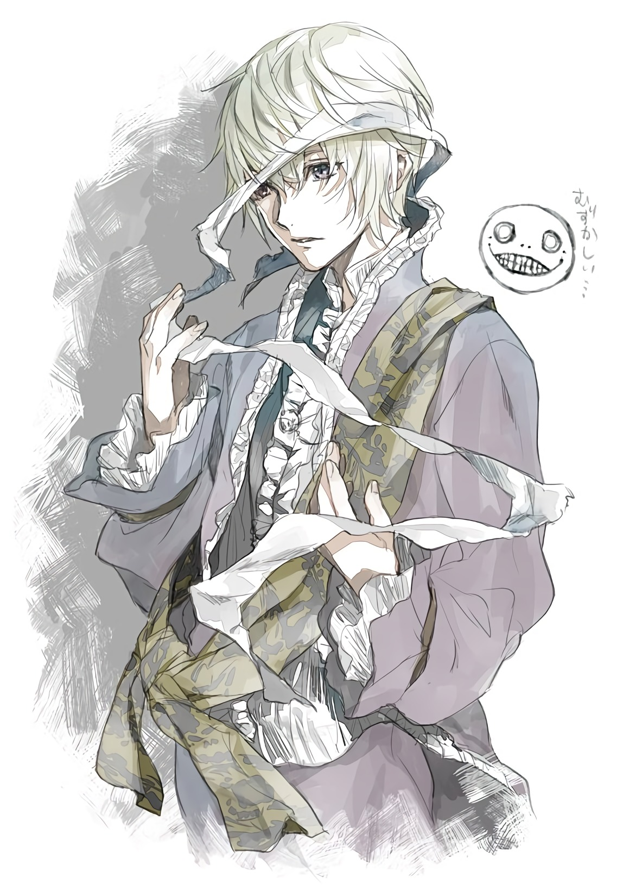

|
Emil is a young, kind hearted boy who lives in the old mansion on the southern plains, tended to by his butler, Sebastian. Despite his gentle demeanor, Emil possesses unimaginable power - everyone he looks at is turned to stone. Rather than abuse this power, Emil is burdened by a terrible guilt and wears a blindfold to avoid petrifying anyone. He brings a sense of youthful exuberance and takes to Nier and Kainé as if they were the older brother and sister he's wanted his entire life. Eventually he is forced to petrify Kainé in an attempt to keep a monstrous Shade locked away, and five years later he requests for Nier to help him find a cure for reversing the effects in a laboratory in his mansion. While in the laboratory, Emil remembers that he was experimented upon by the National Weapons Laboratory in the search to create an "ultimate weapon". His sister Halua, labeled Number 6, became the ultimate weapon while he was known as Number 7 and kept in reserve, in case he was ever needed to keep her at bay. Their mission below the mansion is successful and Emil gains not only the ability to see without harm to others, but also the power to manipulate all forms of magic and and thus the power to reverse the effects of Kainé's petrification. There is a price, however: having gained this power through merging with his sister, Emil is granted a new form reminiscent of his sister's "weaponised" body; he becomes a skeletal creature that floats above the ground, wearing a ragged cloak and wielding an enchanted staff. At first he is ashamed of his new look, but learns to accept it once everyone assures him that they do not feel any differently towards him. |
 |